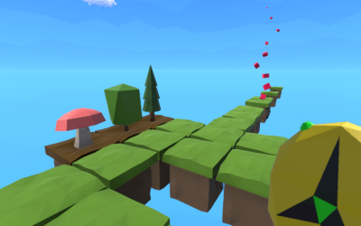
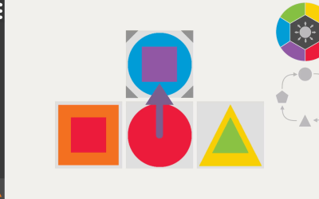
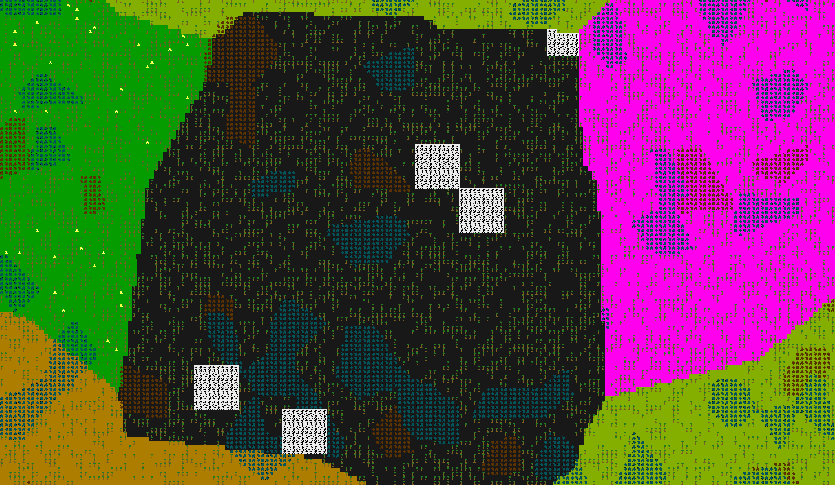
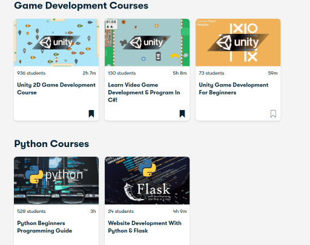
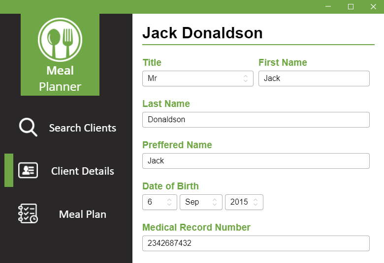
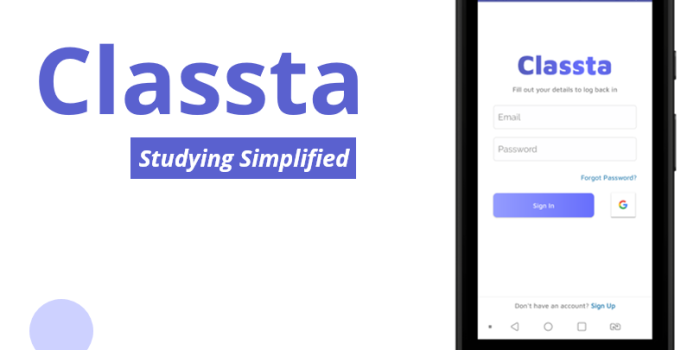
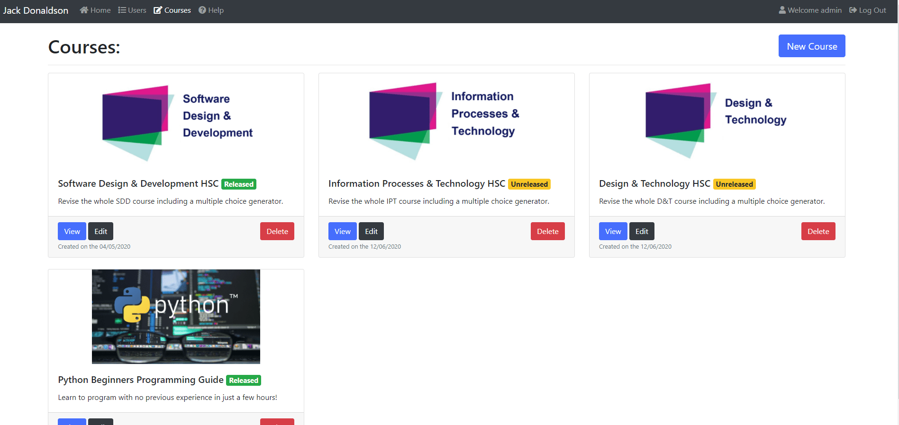
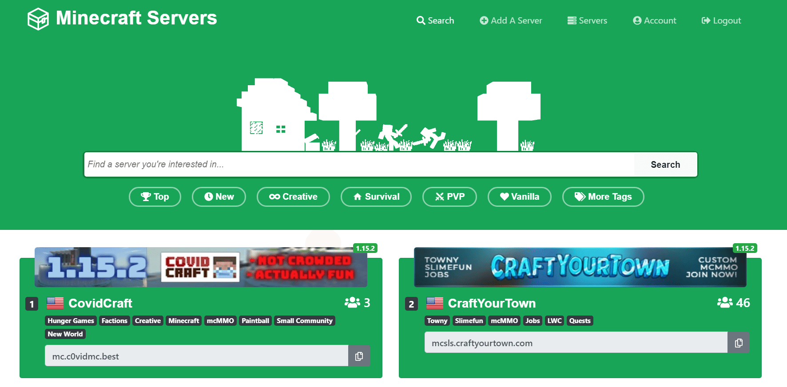

During my time at high school I completed a variety of different projects both during and outside of schoool. Additionally I made sure that I was entered in any Programming or IT related competitions I could. This includes the Australian Informatics Olympiad, UNSW Progcomp, Grok Challenge, Australian STEM Video Game Challenge & National Computer Science.
In addition to various competitions, I have also attended a variety of IT events including the UTS IT Work Experience Program, UTS STEM Days, AIE Holiday Short Courses as well as spending time at the National Computer Science Summer School which allowed me to visit great IT companies like Freelancer, Commonwealth Bank & Macquarie Group.
In regards to my actual studies, I chose to undertake Information & Software Technology during Years 9 & 10, coming first in the course. As for the HSC I studied as many IT related courses as I could, receiving Band 6's & coming first in my class for Information & Processing Technology, Software Design & Development & Design & Technology. The latter of which I studied via Sydney Distance Education High School as my main school didn't offer it.
During Year 10 me and a musical friend decided to enter the Australian STEM Video Game Challenge, together we built a game centered around the theme 'Growth' whereby players can control time, rewinding and fastforwarding through it which have implications on the level layout. For example, a tree might be a barrier in the early stages of its life but may become a bridge once it's fallen over at the end of its life. For this project I was responsible for all the programming and art whilst my friend Robert helped out with the game design and music.
This actually ended up winning the Years 9-12 Unity category which was awesome and meant we got free tickets to PAX and a trip to Melbourne! The game is currently finished and published on Itch.io for free.
View Game Page Shape Palette was a project I completed in Year 11, solely by myself it was also entered into the STEM Video Game Challenge under the theme of 'Emergence'. The goal of the game is to place all the shapes you are given, manipulating & combining them in order to make room on the level. The difficult puzzle game ended up making it the final round but unfortunatley I didn't win the competition again. However, I am in the process of polishing the game and adding new content so that it can become my first game to release on Steam.
This game again is programmed in C# through the Unity Game Engine, something I have had significant experience with and am very comfortable in using.
View Steam Page Currently my newest project I am working on is another game with my friend Robert. The goal of this game is to make it entirely moddable, so much so that the actual base content is a 'mod' in itself. This project sofar has forced me to venture into Reflection as well as really deepen my understanding of abstract classes and interfaces.
Currently we are really early on and as such there is very little visuals to show, however under the hood I am working heavily on building the frameworks for this multiplayer sandbox game.
As a way of supporting myself through high school I started teaching programming and game development courses online through platforms such as Skillshare, Bitdegree and Udemy. This has being my main source of income and has become quite popular with over 20,000 students having watched my classes I now have the #1 Game Development course on Skillshare.
Teaching these tutorials has also forced me to really understand programming at a deeper level and as such allowed me to really reinforce what I know in order to teach it. This is also why I constantly force myself to learn new languages and complete new projects.
As stated before my income used to be mostly from video courses and some occasional freelance programming work. However, more recently I have successfully recieved a job as a Junior Test Engineer at Channel Nine. This role will allow me to step into the professional IT industry and utilise my existing skillsets, particularly with regards to web applications whilst been situated in a brand new state of the art building in North Sydney.
During Year 12 I was contacted by a local nutritionist to produce an application that allows her to quickly produce Meal Plans for her clients. This allows her clients to walk away with something during their first consultation and feel more valued. Additionally I also implemented a database into the application so all her patient data was stored in one universal application that was synched across all of her devices and encrypted to ensure only the correct people had access to it.
This application turned out to be really helpful and she has since contacted me to add additional features which she has appreciated. The application was developed as a web app as it meant I didn't need seperate codebases for different devices as the desktop versions were just runnning a browser under the hood.
For my Design & Technology major work in High School I had to develop a Study Application. This app, named 'Classta' allows students who are interested in similar subjects to find others in their area to meetup and study. This was spurred by the lack of students interested in IT at my school and the difficulties I had in finding other people.
The app was developed for just Android, programmed in Java utilising Android Studio. Currently it has an unlisted page on the Google Play Store, with plans to release it once it is more polished.
As part of selling my online courses I am in the process of constructing my own custom tutorial website. This is written in Python, utilising Flask for the Web Server. This project has forced me to learn payment systems, particularly intergrating with Paypal and Stripe. Additionally I have had to learn about web hosting through AWS, database management and Video Content Delivery through a CDN.
As part of this project I have also been developing an online IDE so that I can set students challenges, similar to the likes of Codacademy or Edstem. This has been a great challenge, forcing me to learn about Docker containers and remotely execution code as well as sandboxing it so as to try and stop anyone with malicious intent.
During the Covid-19 lockdown I was forced to learn online and as such decided to procrastinate by starting a brand new project. This project was one of the first ones to force me to learn about HTML, CSS and Flask. Currently it just supports Minecraft users posting their servers but eventually the plan is to support lots of different games, allowing gamers to connect and find each other.
One big challenge of this project was SEO which meant I really had to focus on producing a fast website that looks good on both mobile and desktop. Additionally getting it ranking high up in Google has been a challenge, with it recieving around 100 unique users a day.
View Server List  Past Experiences
Past Experiences Future Plans
Future Plans Design Comments
Design Comments